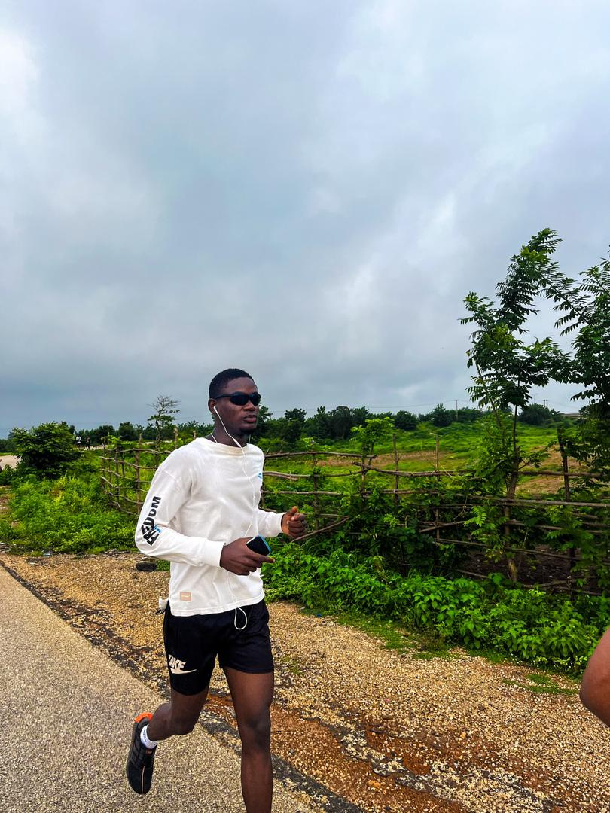
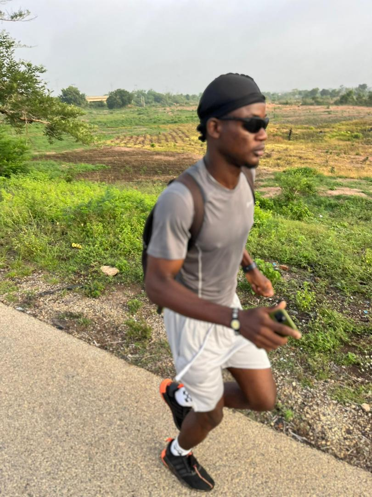

Driven by discipline, fuelled by community. Discover the story and mission behind The 6AM Club.


The 6AM Club wasn't built by a corporate brand or a marketing agency. It was founded by a medical student who is deeply passionate about fitness, the gym, and maintaining an active, athletic lifestyle despite a demanding schedule.
At the core of the founder's philosophy is an unshakeable belief in the power of hard work, determination, and never giving up. When you push your body and mind beyond their perceived limits, you unlock a new level of potential that bleeds into every other aspect of your life—including academics, career, and personal growth.
The club was created to solve a multi-dimensional problem. First, it serves as a haven for people who are willing to take their fitness seriously and want to be surrounded by like-minded individuals. Second, it offers a necessary physical outlet—a "trip" to clear the mind mentally, providing a powerful antidote to the stress of daily life.
Ultimately, it's about connection. The 6AM Club is an interactive community designed to foster deep interpersonal relationships. We work together, suffer together, and grow together. By showing up for each other at dawn, we build bonds that last long after the workout is over.